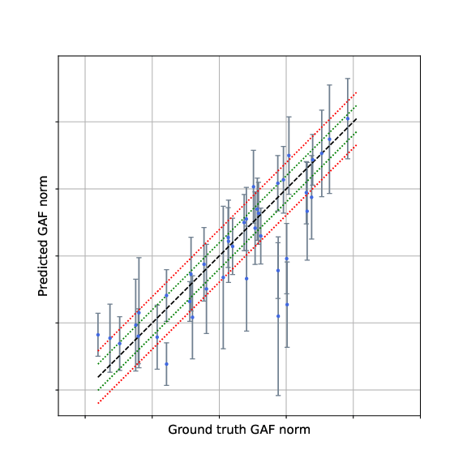
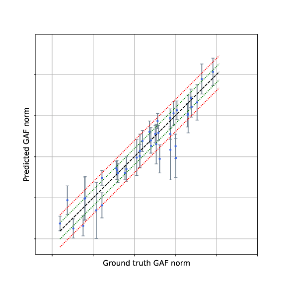
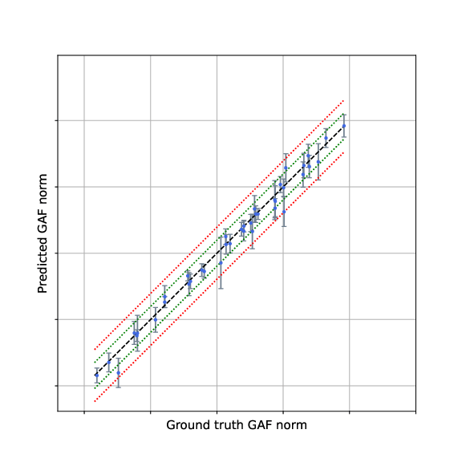
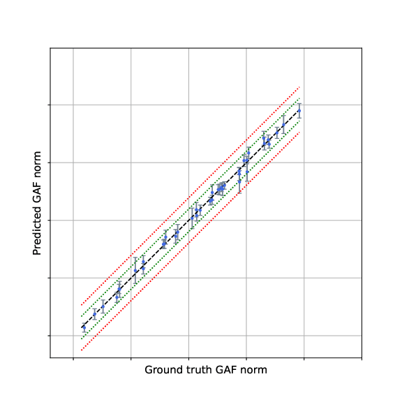
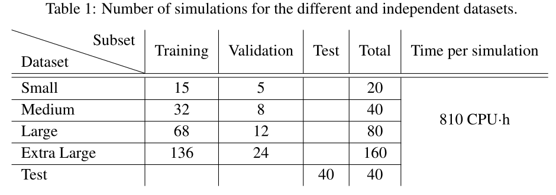

Periodic Neural Mapping for Unsteady Rotor-Blade Pressure and Aeroelastic Load Prediction
2026
Unsteady pressure predictions
On the largest dataset, the periodic-FNM reaches 0.46% pressure MAPE and 0.9992 pressure R2.
Training set: Small
Training set: Medium
Training set: Large
Training set: Extra Large
Generalized aerodynamic forces predictions
On the largest dataset, the periodic-FNM reaches 4.42% GAF magnitude MAPE and 0.99 GAF magnitude R2.
Training set: Small

Training set: Medium

Training set: Large

Training set: Extra Large

Periodic Neural Mapping for Unsteady Rotor-Blade Pressure and Aeroelastic Load Prediction
Learning periodic unsteady pressure fields with neural operators to improve aeroelastic load prediction.
TL;DR: p-FNM learns a continuous mapping from operating conditions and time to rotor-blade pressure fields, preserving periodicity and improving GAF prediction.

Overview
This paper addresses unsteady pressure prediction on a transonic rotor blade under varying operating conditions. The goal is not only to reconstruct the pressure field accurately, but also to preserve the temporal coherence needed for reliable generalized aerodynamic forces (GAFs).
Motivation
High-fidelity URANS simulations are expensive, while aeroelastic quantities depend strongly on the time evolution of the pressure field. Sequential latent-space models can accumulate errors over time and degrade spectral accuracy. This motivates a continuous-time operator-learning formulation.
Method
Input
Operating conditions (α, β, d, Π) and periodic time t.
Periodic encoding
Time is embedded as (cos(2πt/T), sin(2πt/T)) to remove boundary discontinuities.
p-FNM
A vector-to-function block followed by Fourier layers learns the pressure field directly.

Dataset
The database contains four training regimes: Small, Medium, Large, and Extra Large, with 20, 40, 80, and 160 simulations, plus a separate test set of 40 simulations. Each sample contains 192 time snapshots over one blade-passing period.

Results
p-FNM consistently outperforms the TPM baseline on pressure reconstruction and GAF prediction. On the largest dataset, it reaches 0.46% pressure MAPE and 4.42% GAF magnitude MAPE.


Key observations
- Pressure errors are mostly concentrated near shock waves.
- Temporal coherence is critical for accurate spectral quantities.
- Direct GAF prediction performs worse than predicting pressure first.
- More training data improves both pressure and GAF accuracy.
Qualitative examples


Acknowledgments
The presented work has been performed in the framework of the HE-ART project, part of the Clean Aviation Joint Undertaking, and funded by the European Union’s Horizon 2020 research and innovation programme under grant agreement N° 101102013. It was also supported by the "ARIAC by DigitalWallonia4.ai" research project (grant agreement No 2010235– TRAIL institute) and benefited from computational resources made available on the Tier-1 supercomputer of the Fédération Wallonie-Bruxelles, infrastructure funded by the Walloon Region under grant agreement N° 1910847.
Abstract
Accurate prediction of unsteady aerodynamic loads remains a major challenge in turbomachinery design. High-fidelity Computational Fluid Dynamics (CFD) simulations are computationally expensive, while aeroelastic Quantities of Interest (QoI) depend sensitively on the temporal evolution of the pressure field. In this work, we introduce a neural-operator-based framework, named periodic Fourier Neural Mapping (p-FNM), for the prediction of unsteady pressure distributions on turbine rotor blades simulated using chorochronic numerical hypothesis. The proposed architecture embeds temporal periodicity directly into the model formulation and learns a continuous mapping from operating conditions and time to pressure fields. Unlike sequential latent-space approaches, the proposed formulation predicts pressure fields independently at any time, thereby preserving temporal continuity and avoiding error accumulation. The proposed p-FNM is evaluated on a database of unsteady rotor-blade simulations and compared with a state-of-the-art reduced-order baseline based on a variational autoencoder and recurrent neural network, referred to as the Temporal Prediction Model (TPM). Performance is assessed both on pressure-field reconstruction and on the prediction of Generalized Aerodynamic Forces (GAFs), which constitute the primary aeroelastic QoI. Across all considered training datasets, the proposed model consistently outperforms the TPM. On the largest dataset, the p-FNM achieves a pressure-field mean absolute percentage error of 0.46% and a GAF-magnitude prediction error of 4.42%, corresponding to relative improvements of approximately 60.7% and 77.6% over the TPM baseline, respectively. The minimum weighted phase error reaches 0.060 rad, demonstrating the ability of the proposed framework to accurately preserve the temporal characteristics of the aerodynamic response. The analysis further shows that GAF prediction is substantially more challenging than pressure-field reconstruction and that temporal coherence plays a critical role in the accurate prediction of spectral aerodynamic quantities. These results highlight the potential of neural-operator formulations for learning periodic unsteady aerodynamic manifolds and demonstrate their suitability for reduced-order modeling, aeroelastic analysis, and future machine-learning-assisted turbomachinery design workflows.
BibTeX
@article{salesses2026periodic,
title={Periodic Neural Mapping for Unsteady Rotor-Blade Pressure and Aeroelastic Load Prediction},
author={Lionel Salesses and Joachim Dominique and Tariq Benamara and Théo Flament and Franck Mastrippolito},
year={2026},
eprint={2609.21590},
archivePrefix={arXiv},
primaryClass={physics.flu-dyn},
url={https://arxiv.org/abs/2609.21590},
}